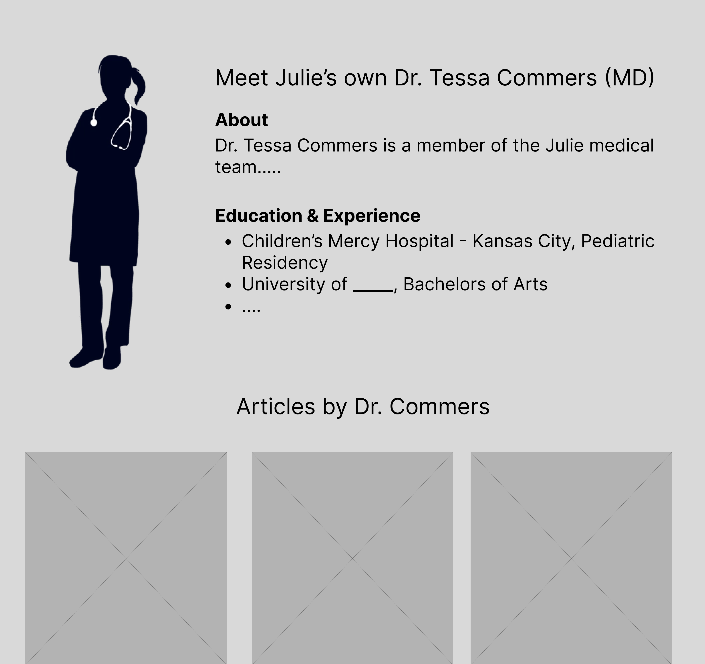
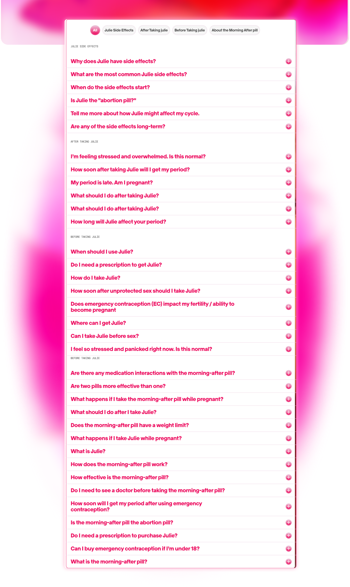

Julie is a women's consumer healthcare startup with a new mission of becoming the one-stop shop for
women's reproductive and sexual health. Beyond their own emergency contraceptive pill, Julie is building
a resource hub for AFAB users that leverages medical advice, AI assistance, and cultural relevance.
julie's goals include
1. Promoting shame-free information on pleasure, confidence and care for women, not just medical advice
and
crisis management.
2. Keeping medical accuracy and clinical rigor at the forefront of AI systems.
3. Maintaining user trust in not just Julie's products, but in Julie as a brand; this helps convert site
visitors into customers and regular site users.
the opportunity:
Julie's site received 190k user sessions and 350k site views over 6 months, with the top traffic producer
being organic search. These statistics signal an existing engaged audience, with the chance to expand
beyond a healthcare brand but also a trusted partner in women's reproductive health.
phase 1: brand alignment & feature development
Context: Julie's existing site serves primarily as a product page for Julie's two
flagship products, emergency contraception and cold sore gel. Julie's new mission with this new site
is simple: "In a couple of years, when a college student has an uncomfortable question about sex, a
friend says 'just ask Julie'"
We began with auditing the existing website and comparing it against new designs. The original home
page features the EC pill as well as numerous large headers and tabs with resources about the pill
itself. The new proposed homepage included a section for medical articles, FAQ, and a pilot AI.

A lo-fi mockup for a medical team's profile page, containing a headshot
short about and any medical credentials

The previous design of the article grid; the lack of an author and
unrelated cover images were a point of concern
challenge: medical credibility
The new articles page with reviewed medical articles did not visually uphold the sensitivity and
scientific nature of the subject material. Julie's site lacked the medical credibility that would keep
users coming to Julie as a first resource for medical advice. Before trying to uplift and handle
sensitive health questions, users need to see Julie as a place with healthcare professionals calling the
shots.
Upon identifying the clear gap between medical professionals and medical advice, I created a low-fidelity
wireframe of medical team pages. These pages feature professional headshots, education background, and
work history to create a sense of much needed professionalism. Members of the medical team are
board-certified and Doctors of Medicine (MDs), something that should be clear on a site with lots of
medical articles.

The current Julie homepage, laregly a product page

The proposed new homepage for Julie, balancing articles and an AI chat
feature
challenge: faq experience
The original FAQ page presented itself as an extensive, intimidating list of questions ranging from side
effects to before and aftercare of the EC pill. This overwhelming and exhaustive list created a sense of
fear rather than a sense of genuine curiosity or interest.
The intern team advocated for a restructuring of the FAQ page, namely for two things: modularity and
reframed language.
Our mockup above splits the questions into expandable drawers with just the subject clearly labeled
above. Without the subjects, it almost seemed the whole list was about the EC's side effects, but a
clear text hierarchy helped with making it readable and clear the FAQs were more than just the pill's
effects.

The previous long and extensive list of questions

The current FAQ section with expandable drawers
phase 2: visual system & content strategy
Context: Using the fundamental changes suggested in Phase 1, the second phase
included a redesign of the first proposed site with a more detail oriented focus. This phase largely
included balancing cultural relevance while maintaining the consumer healthcare brand.
challenge: visual system (colors)
The first design iteration focused on pinks, purples, and oranges as the primary color palette. While
warm and soothing, the saturation and misalignment between Julie's original packaging and brand identity
was a point of concern, and warranted shifting towards a different color palette. The team suggested
keeping the gradient, but opting to use that in the AI chat to keep the soothing vibe while being
visually appealing in the new AI feature. The remainder of the website shifted towards more white and
signature pink with brand photos and less 3-D, unrelated graphics for visual assets.

Proposed homepage from Phase 1

Improved homepage balancing the AI chat feature and product page

The previous footer, with a new yet unrelated graphi

The new footer, featuring more relevant product information
challenge: article section
The article grid used a card layout system with tags and titles for each piece. This iteration added
small credential tags next to medical authors' names - a direct response to Phase 1's credibility
concerns. The images used as covers, however, created an unexpected problem: the Pinterest-like look
created cultural relevance, but detached from the medical authority of the articles themselves. The lack
of related images were confusing and did not look like a grid of articles, but rather a blog site.
The main point of feedback was the visual assets and images used, but also validating the use of more
animation and moving parts for the site. For example, hover effects on the article page - a fuzzy pink
outline and rounding corners, added the sense of play without compromising on credibility.

Improved article grid with author, medical tag, and hover animation
phase 3: human-ai interaction design
Context: Before final rollout, we spent time with Julie's newest feature: the AI
assistant powered by Ema. This generative AI model was trained exclusively on medically reviewed
data and is only capable of answering questions surrounding reproductive health. As mentioned
before, the AI assistant works with sensitive health information and thus requires a full analysis
using human-AI interaction principles to keep the AI accessible and shame-free.
challenge: ai placement
With this feature being innovative and newly implemented, Julie Products spent time debating whether
keeping the AI accessible at all times (known as a "sticky bar") while scrolling would be the best way
to encourage its usage. However, it proved to be a little too gimmicky; having the AI constantly
available discouraged us from checking other informational parts of the site (articles, FAQ). We
advocated for repositioning the AI after the FAQ section if it was going to be native to the homepage.
The sticky chat bar emerged as the solution—a persistent but unobtrusive way to keep AI available
without being pushy. The FAQ serves as the primary entry point, while the AI is there for more specific
questions.

The current AI chat interface, with an example response demonstrating
inclusivity and shame-free language

AI integration in the FAQ section. The header and hierarchy balances the
two features
challenge: conversational design & ai interface
A key part of the AI was the experience it provided users, especially those who may be in a more
vulnerable place concerning birth control, pregnancy, and other reproductive topics. The process of
vetting the AI was crucial to ensure a positive user experience, which relied on everything from the
actual interface and features provided to the language used when responding. The AI excelled at
inclusivity, using supportive, comforting language that aligned with Julie's shame-free mission.
However, the interface itself slowly became more overwhelming and cluttered as more information was
provided by the AI. For example, the AI references existing articles on the site and allows the user to
split-screen the article and conversation, which we hoped would help with user engagement and trust. In
practice, the interface became unintuitive, and toggling between the different parts of the interface
(the article, close button, exiting back to the site) became difficult. We suggested a slider-controlled
split-screen view to aid user control while preserving the connection between the user, AI, and medical
information.

Initial AI Interface, without branding colors

AI Chat, without branding colors
final product - functioning new site

New and improved homepage, balancing a comfortbale vibe while featuring the AI chat
Update as of February 2026 - the final website is not yet public, but will
be soon!
← return to projects